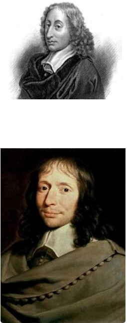
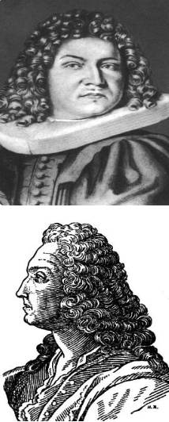
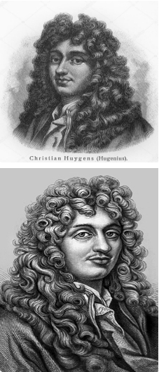

Раздел Биографии Биографии ученых, привнесших огромный вклад в изучение вероятности
Блез Паскаль

Блез Паскаль - выдающийся ученый и математик.
Якоб Бернулли

Якоб Бернулли - один из величайших математиков, привнесший в огромный вклад в науку.
Христиан Гюйгенс

Христиан Гюйгенс - известный ученый, великий математик и физик. Христиан Гюйгенс был выдающимся голландским математиком, физиком, астрономом и инженером XVII века.